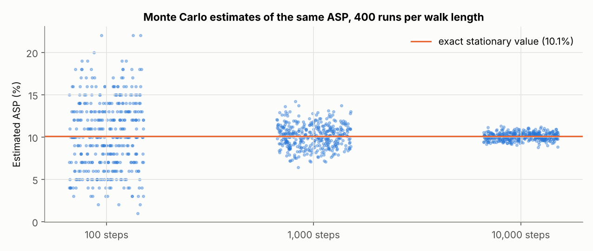
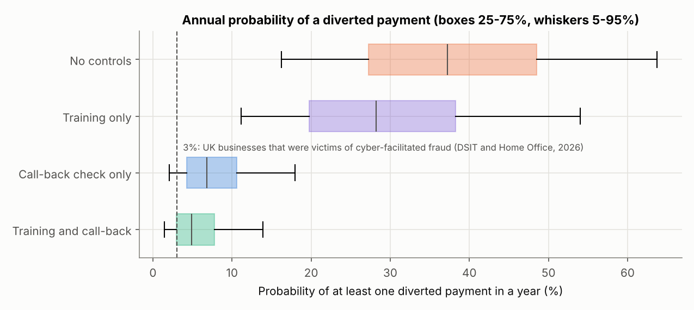
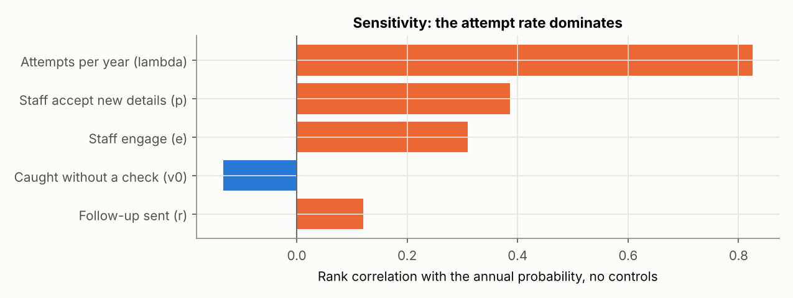
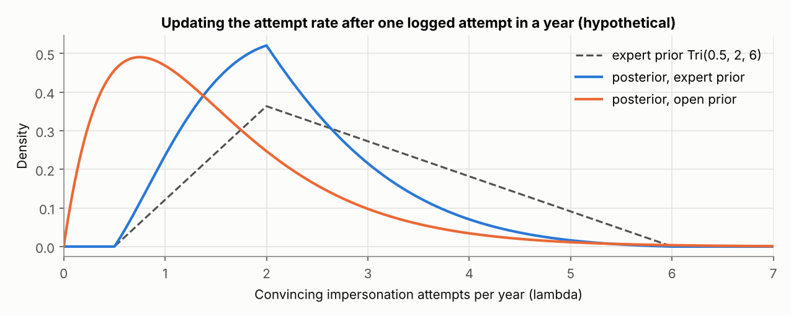

Unit 8: Implementing Quantitative Risk Models

This unit puts quantitative risk modelling into practice. It uses Monte Carlo simulation, Bayes’ theorem, attack trees and Markov models on real problems, reviews case studies of their use in project management and safety estimation, and asks how to choose between the techniques and how far their results can be trusted. The artefacts below are my answers to the seminar questions on Aijaz and Nazir’s (2024) model of social engineering threats, a notebook that tries to reproduce their published results, and a quantitative model of supplier impersonation fraud at Pampered Pets.
Reflection
Structured using the What? So what? Now what? model (Rolfe, Freshwater and Jasper, 2001).
What?
Unit 7 introduced quantitative risk models. Unit 8 asked me to build one of a real situation and to judge how far it could be trusted. The required reading was Eckstein and Riedmueller’s (2002) paper on YASAI, an Excel add-in for teaching Monte Carlo simulation. I had already rebuilt Fizell’s (2022) Monte Carlo tutorial in Unit 7, so I spent most of the recommended reading time on Aijaz and Nazir’s (2024) attack tree and Markov model of social engineering threats, and on Zografopoulos et al.’s (2021) survey of threat modelling and risk assessment in cyber-physical energy systems. For the seminar I answered four questions on Aijaz and Nazir. Then I tried to reproduce their results in Python, and finally I built a model of supplier impersonation fraud for Pampered Pets from the spoofing row of our team’s STRIDE table (Group 2, 2025). The seminar answers and the two notebooks are the artefacts below.
So what?
Eckstein and Riedmueller (2002) wrote YASAI because commercial add-ins got in the way of teaching. Students spent their time on dialog boxes and installation problems when they should have been learning how simulation works. Their answer was to put almost everything into cell formulas: random draws, the cells to be recorded and the scenarios to be compared. A printout of the formulas and the output report then documents the whole model. That made me think about my executive summary, which listed its inputs but never said how they were combined, so that in Unit 7 I had to reconstruct its structure before I could check it (Stevens, 2026). I worked in Python, not Excel, but for the same reason: a notebook keeps the code, the results and the explanation together under version control. The paper has clear limits. YASAI is a 2002 teaching tool, slower than the commercial packages and without charts, and its evidence of success is one semester of classroom use in which students reported fewer problems than they had with @Risk. That shows the add-in was easier to use, not that students learned more. One default stayed with me, though. YASAI uses the same random seed for every scenario, which is the standard way to compare options with common random numbers. I used it in Artefact 3, and it let me say that a call-back check beat staff training in every one of 20,000 input sets, a stronger claim than a comparison of two averages from separate runs.
Aijaz and Nazir’s (2024) idea is appealing. They split each social engineering attack into a channel (email, phone or face to face) and a persuasion principle such as authority, use an attack tree to estimate how often a combination occurs and a four-state Markov chain to estimate how often it succeeds. Rebuilding it took the shine off. The occurrence probabilities did reproduce, all ten of them, but only once I counted the channel twice in every scenario with two principles, which the authors seem to acknowledge as their ‘repeated labelling’ problem. The inputs are shares of past attacks that add up to one, not likelihoods, and their finding that occurrence falls when more principles are used follows from multiplying numbers below one. The success probabilities did not reproduce at all. None of 512 ways of mapping the inputs to the chain matched them, and the published order of the scenarios contradicts the inputs. More fundamentally, in their chain the attacker always succeeds in the end, so the stationary probability of success measures how quickly that happens, and it changes from 10.1% to 5.7% when only the authors’ arbitrary restart rule is altered. They estimated it by simulation, although it can be calculated exactly, and a walk of 1,000 steps carries noise of about ±2.5 points, which is larger than most of the differences between their scenarios. The authors call their approach more grounded than methods that rely on assumptions, yet their own tables describe the frequencies and effectiveness values as assumed. The frequency data come from Bullée et al. (2018), who analysed 74 scenarios taken from four books written by social engineers, so they describe the attacks that worked and were written up, not attacks in general. What bothered me most was that I found these faults in a published paper far faster than I had found the ones in my own executive summary in Unit 7. Being able to reproduce a number is the minimum test before relying on it, and peer review had not applied that test here.
Zografopoulos et al. (2021) widened the picture. Their threat model describes an adversary by knowledge, access, specificity and resources, which fits the supplier fraudster in Artefact 3 well: remote, targeted, with limited knowledge and modest resources. It also reminded me that Pampered Pets does not need to fear a nation state to face a real threat. Their risk assessment is less convincing. Risk is threat probability multiplied by damage, but damage is a sum of objective priorities from 1 to 4 multiplied by impacts rated low, medium or high and scored 1 to 3. A survey in IEEE Access that sets out to quantify risk still does arithmetic on ordinal scores, which is the problem Cox (2008) identified in risk matrices and the one I raised about Jbair et al. (2022) in Unit 4.
Building my own model was where the unit’s outcome of selecting the appropriate technique became concrete. The STRIDE row rated spoofing by phishing as medium likelihood and high risk (Group 2, 2025), but it could not say which step of the attack to break. An absorbing Markov chain with states where the attack really fails gave a probability of success for a single attempt, and a two-stage Monte Carlo carried the uncertainty in my inputs through to the result. Requiring every change of supplier bank details to be confirmed by phoning a number already on file cut the median annual probability of a diverted payment from 37% to 7%. Training reduced it only to 28%, with a range that includes no effect at all, which is consistent with Lain, Kostiainen and Čapkun’s (2022) finding that embedded phishing training did not make employees more resilient. The rate of convincing attempts drove the result far more than any behavioural input. Checking the model against national data was uncomfortable. An estimated 3% of UK businesses were victims of fraud that resulted from a cyber breach or attack in the last year (DSIT and Home Office, 2026), and my model with no controls was more than ten times higher. I could not defend the 37%, and I had to accept that the most precise-looking number in the notebook was the weakest. The ranking of the controls survived every input set, though, because the attempt rate scales every option equally. I also tested the memoryless assumption that my executive summary had given as a reason to rate Markov models low. Adding one step of memory changed the result by about 10%, so that objection was a reason to test the method, not to reject it.
Now what?
Four changes follow. First, before I rely on a quantitative result from a paper or a supplier, I will try to reproduce at least one of its numbers, and if I cannot, I will say so wherever I cite it. Second, in any state-based model I will ask which states the attack cannot come back from, because a probability of success only means something if the attack can fail. Third, before presenting an absolute probability I will compare it with an external benchmark such as the Cyber Security Breaches Survey. Where it does not survive that check, I will present the ranking of controls, which is usually more robust, and name the input that needs measuring. Fourth, I will keep using common random numbers when comparing options. For Pampered Pets I will recommend two cheap measures for phase 1 of the team’s plan: a call-back rule for any change to supplier bank details, and a simple log of suspicious supplier emails to replace my assumed attempt rate with data. I will carry both into the evaluation of the final project in my end-of-module e-portfolio. At work, I will check whether our own process for changing a supplier’s bank details depends on the person who received the request.
Artefact 1: Seminar Activity: Modelling Social Engineering Threats
Answers prepared for the Unit 8 seminar on Aijaz and Nazir (2024). Where an answer draws on my attempt to reproduce the paper, the evidence is in Artefact 2.
1. What are the main challenges in modelling and evaluating the outcomes of social engineering threats, and how does this study attempt to address them?
The authors describe the field as being in its infancy when it comes to rigorous modelling and evaluation. Four challenges stand out. First, the target is a person, and whether an attack works depends on the victim’s demographics, workload and culture and on the attacker’s skill and resources, which the authors list but leave out of their model. Second, good data are scarce. Most attempts are never reported, failures leave no record, and the attacks that are written up are the successful ones. The authors admit that the published evidence they use ‘is insufficient to rely on’. Third, there was no agreed way of representing the steps of an attack. Fourth, whether an attack happens and whether it succeeds are different questions that are easily run together.
The study responds by breaking each threat into atomic parts, a modality and one or more persuasion principles, and by giving each part an occurrence probability and an effectiveness probability taken from published studies (Bullée et al., 2018; Mouton, Leenen and Venter, 2016). An attack tree then gives the attack occurrence probability (AOP), and a Markov chain with Disconnect, Connect, Persuade and Success states gives the attack success probability (ASP). The method is applied to ten scenarios. Keeping occurrence and success apart is the paper’s most useful idea. The data problem, however, is moved, not solved: the tables call their values ‘assumed’, and the occurrence values are shares of attacks that add up to one. The ten scenarios are built from the same tables, so applying the method to them shows that it runs, not that its outputs match what happens in practice. A comparison with observed outcomes, such as click rates in phishing simulations, would be needed for that.
2. How do persuasion principles and modalities contribute to the success of SETs, and why is it important to analyse them systematically?
Persuasion principles explain why a target complies. The paper uses the six principles that Bullée et al. (2018) take from Cialdini: authority, commitment, reciprocity, liking, scarcity and conformity (social proof). Each is a mental shortcut that people normally rely on, such as doing what someone senior asks or returning a favour, and an attacker triggers it to cut short careful thought. The modality decides how many people can be reached and how persuasive the contact is. In Table 1 email is the most common channel but the least effective, face to face is rare but the most effective, and voice calls sit between them. An attacker trades reach against persuasiveness, which is why bulk phishing is cheap and usually fails, while a phone call from someone claiming to be IT support is rarer and often works.
A systematic analysis makes the human factor concrete enough to compare and to defend against. Bullée et al. (2018) found that authority was used considerably more often than any other principle, which tells an organisation where to start. A defence aimed at a principle is more precise than general awareness training: if authority is the main lever, a rule that any request for money, credentials or data is checked through an independent channel, whoever appears to be asking, removes it. Defences can also be aimed at a channel, for example a call-back for any bank detail change requested by email. The analysis has limits. Bullée et al.’s scenarios come from four books by social engineers about attacks that worked, so they show which principles appear in success stories, not how often each succeeds. Most of the effectiveness figures in Table 2 have no stated source, and authority’s effectiveness (0.63) is identical to its occurrence share.
3. What role do the Attack Tree Model and Markov Chain Model play in estimating the AOP and ASP of SETs?
The attack tree describes how an attack is put together. The root is the attacker’s goal and the leaves are the modality and principles, joined by AND and OR gates. AOP is calculated from the bottom up: an OR gate takes the largest of its children and an AND gate their product, so email (0.5) with authority (0.63) gives 31.5%. The Markov chain describes how an attack unfolds. Its transition probabilities depend on the effectiveness of the modality and principle, Success is made non-absorbing by sending it back to every state with probability 1/4, and ASP is the stationary probability of Success, estimated by Monte Carlo simulation. The authors conclude that single-principle attacks are more likely to occur but less likely to succeed, and that combining principles lowers occurrence and raises success. Face to face with authority (16%) and a voice call using authority and commitment (18%) have the highest ASPs.
In principle the two models are complementary: the tree tells you how common a combination is and the chain how it progresses. My reproduction in Artefact 2 found that only the tree’s numbers can be checked. All ten AOPs reproduce, but only if the modality is counted once for each principle. No mapping of the inputs reproduces the ASPs. The stationary probability measures how fast an attack reaches Success in a chain where it always gets there eventually, and it depends on the authors’ restart rule. Neither number has a time base, and impact and risk are left out of scope, so AOP and ASP can rank scenarios against each other but cannot yet be turned into a likelihood of loss for an organisation.
4. In what ways can the findings of this study support the development of effective policy frameworks for mitigating social engineering threats in information systems?
The study supports policy in three ways. First, it gives a structure for prioritising: channels with a high occurrence, such as email, call for technical and procedural controls, while principles with a high effectiveness, such as authority, call for rules that work whoever appears to be asking. Second, the states of the Markov chain map onto control points. Filtering, caller verification and a report button act at Connect. Training about specific principles and agreed scripts for refusing act at Persuade. Verification, multi-factor authentication and separation of duties act before Success. A policy framework can be checked by asking whether every transition has a control. Third, it argues for training built around persuasion principles instead of generic awareness sessions.
I would not set policy thresholds from the paper’s numbers, for the reasons given above. A better policy would require the organisation to collect its own data, such as reported suspicious messages and the results of phishing exercises, and to feed them into the model. Lain, Kostiainen and Čapkun (2022) showed that employees reporting suspicious emails can work as a fast collective detector, and found that embedded training could make staff more susceptible, not less. Phishing exercises also raise ethical questions about deceiving staff, so the policy should say how they are run and how results are used. For Pampered Pets, Artefact 3 points to three policy statements: every change of supplier bank details is confirmed by phoning a number already on file; suspicious messages are reported and logged; and, where four staff allow it, the owner approves any payment to a new account.
Artefact 2: Reproducing Aijaz and Nazir’s Model
Python notebook: unit8_aijaz_nazir_reproduction.ipynb. All inputs are the values printed in Tables 1 and 2 of the paper; the targets are its Table 3.
1. Attack tree: the occurrence probabilities
The paper’s Algorithm 1 (OR takes the maximum, AND the product) reproduces every published AOP, but in the three scenarios with two persuasion principles only if each principle has its own copy of the modality leaf, as in the paper’s Figure 2.
| Case | Modality | Principles | Published AOP | Modality counted once | Modality counted per principle |
|---|---|---|---|---|---|
| 1 | Authority | 31.5% | 31.5% | 31.5% | |
| 4 | Voice call | Authority | 25.2% | 25.2% | 25.2% |
| 7 | Face to face | Authority | 6.3% | 6.3% | 6.3% |
| 8 | Voice call or email | Authority, reciprocity | 1.7% | 3.5% | 1.7% |
| 9 | Voice call | Authority, commitment | 1.1% | 2.8% | 1.1% |
| 10 | Commitment, reciprocity | 0.3% | 0.6% | 0.3% |
Cases 2, 3, 5 and 6 also reproduce exactly. The occurrence values in each table sum to 1, so they are shares of past attacks, not likelihoods for an organisation. Case 9 only reproduces with voice call alone, although the text of the scenario lists voice call and email.
2. Markov chain: the success probabilities
| Test | Result |
|---|---|
| Case 1 with α = modality effectiveness and β = γ = principle effectiveness, solved exactly | 10.1% (published 12.0%) |
| 512 mappings of the inputs to α, β and γ, tested against the seven single-principle cases | None reproduces the column; the best is 1.5 points out on average |
| Published order against the inputs | Commitment (0.29) scores above reciprocity (0.41) with both email and voice; email with authority scores above voice call with authority |
| Probability of eventual success in the original chain | 1.0, because failures return to Disconnect |
| Changing only the restart rule after Success | 10.1% (paper’s 1/4 rule), 5.7% (restart to Disconnect), 7.9% (restart to Connect) |
| Spread of Monte Carlo estimates, 1,000-step walk | 7.5% to 12.5% for a true value of 10.1% |

With a restart to Disconnect, the stationary probability equals 1 / (1 + expected steps to success), so it measures how quickly an attack succeeds, not how likely it is to work.
Artefact 3: A Quantitative Model of Supplier Impersonation Fraud at Pampered Pets
Python notebook: unit8_pampered_pets_invoice_fraud_model.ipynb. Turns the spoofing row of our team’s STRIDE table (phishing emails against email, invoices and supplier trust) into a quantitative model. Every input is an assumption made for this exercise; the case study gives no figures for payments or email volumes.
1. The model
An email that appears to come from one of Pampered Pets’ overseas suppliers asks for the next invoice to be paid to a new account, using the authority principle. A single attempt is an absorbing Markov chain: Delivered, Engaged and Persuaded are transient states, and the attack ends either in Paid or in Stopped (ignored, refused or caught). An ignored email may be followed up. The annual number of attempts is Poisson, and 20,000 input sets are drawn from triangular ranges before each year is simulated. All four control options use the same random numbers, as YASAI does by default (Eckstein and Riedmueller, 2002).
| Input (assumed) | Range: min, most likely, max |
|---|---|
| Convincing impersonation emails reaching the inbox per year | 0.5, 2, 6 |
| Staff member engages with an email | 0.20, 0.40, 0.60 |
| Attacker follows up an ignored email | 0.20, 0.40, 0.60 |
| Engaged staff member accepts the new bank details | 0.20, 0.40, 0.60 |
| Change caught before payment: no formal check / call-back to a known number | 0, 0.10, 0.30 / 0.70, 0.90, 0.97 |
| Training multiplier on engagement and acceptance (above 1 means training makes things worse) | 0.60, 0.85, 1.05 |
| Value of a diverted payment (GBP) | 1,500, 4,000, 15,000 |
2. Comparing controls
| Option | Success per attempt (median) | P(at least one diverted payment in a year): median (5th–95th percentile) | Expected annual loss | 95th percentile annual loss |
|---|---|---|---|---|
| No controls | 17.6% | 37% (16%–64%) | £3,425 | £14,624 |
| Training only | 12.6% | 28% (11%–54%) | £2,487 | £12,468 |
| Call-back check only | 2.7% | 7% (2%–18%) | £562 | £5,291 |
| Training and call-back | 1.9% | 5% (1%–14%) | £415 | £3,649 |

Because the options share random numbers they can be compared input set by input set: the call-back check beats training alone in 100% of the 20,000 input sets. Its median reduction in the annual probability is 81%, against 23% for training.
3. Sensitivity, the national benchmark and a Bayesian update

The attempt rate drives the result (rank correlation 0.83). Against an estimated 3% of UK businesses that were victims of cyber-facilitated fraud (DSIT and Home Office, 2026), the no-controls median is more than ten times higher; matching 3% would need one convincing attempt about every six years. The absolute figures are therefore not defensible, but the ranking of controls does not depend on the attempt rate.

| Attempt rate (hypothetical data: one attempt logged in a year) | Mean (5th–95th percentile) | P(loss in a year), no controls, median |
|---|---|---|
| Expert prior, no data | 2.8 (1.1–5.0) | 37% |
| Expert prior after the log | 2.2 (1.0–3.9) | 30% |
| Open prior after the log | 1.5 (0.3–3.6) | 19% |
A one-step memory for follow-up emails, with their effect halved or raised by half, changed the success probability per attempt by about 10% either way (16.9% to 20.6%), so the memoryless chain is adequate for this scenario.
References
Aijaz, M. and Nazir, M. (2024) ‘Modelling and analysis of social engineering threats using the attack tree and the Markov model’, International Journal of Information Technology, 16(2), pp. 1231–1238. Available at: https://doi.org/10.1007/s41870-023-01540-z (Accessed: 3 October 2026).
Bullée, J.-W.H., Montoya, L., Pieters, W., Junger, M. and Hartel, P. (2018) ‘On the anatomy of social engineering attacks: a literature-based dissection of successful attacks’, Journal of Investigative Psychology and Offender Profiling, 15(1), pp. 20–45. Available at: https://doi.org/10.1002/jip.1482 (Accessed: 3 October 2026).
Cox, L.A. (2008) ‘What’s wrong with risk matrices?’, Risk Analysis, 28(2), pp. 497–512. Available at: https://doi.org/10.1111/j.1539-6924.2008.01030.x (Accessed: 3 October 2026).
Department for Science, Innovation and Technology (DSIT) and Home Office (2026) Cyber security breaches survey 2025/2026. Official statistics. Available at: https://www.gov.uk/government/statistics/cyber-security-breaches-survey-20252026/cyber-security-breaches-survey-20252026 (Accessed: 3 October 2026).
Downey, A.B. (2021) Think Bayes: Bayesian statistics in Python. 2nd edn. Sebastopol, CA: O’Reilly Media. Available at: https://allendowney.github.io/ThinkBayes2/ (Accessed: 3 October 2026).
Eckstein, J. and Riedmueller, S.T. (2002) ‘YASAI: yet another add-in for teaching elementary Monte Carlo simulation in Excel’, INFORMS Transactions on Education, 2(2), pp. 12–26. Available at: https://doi.org/10.1287/ited.2.2.12 (Accessed: 3 October 2026).
Fizell, Z. (2022) ‘How to create a Monte Carlo simulation using Python’, Towards Data Science, 8 February. Available at: https://towardsdatascience.com/how-to-create-a-monte-carlo-simulation-using-python-c24634a0978a/ (Accessed: 3 October 2026).
Group 2 (2025) A risk assessment report for Pampered Pets based on ISO/IEC 27005:2022 and ISO 31000:2018. Unpublished team report, Security and Risk Management module. University of Essex Online.
Jbair, M., Ahmad, B., Maple, C. and Harrison, R. (2022) ‘Threat modelling for industrial cyber physical systems in the era of smart manufacturing’, Computers in Industry, 137, p. 103611. Available at: https://doi.org/10.1016/j.compind.2022.103611 (Accessed: 3 October 2026).
Lain, D., Kostiainen, K. and Čapkun, S. (2022) ‘Phishing in organizations: findings from a large-scale and long-term study’, in 2022 IEEE Symposium on Security and Privacy (SP). San Francisco, CA: IEEE, pp. 842–859. Available at: https://doi.org/10.3929/ethz-b-000588856 (Accessed: 3 October 2026).
Mouton, F., Leenen, L. and Venter, H.S. (2016) ‘Social engineering attack examples, templates and scenarios’, Computers & Security, 59, pp. 186–209. Available at: https://doi.org/10.1016/j.cose.2016.03.004 (Accessed: 3 October 2026).
Rolfe, G., Freshwater, D. and Jasper, M. (2001) Critical reflection in nursing and the helping professions: a user’s guide. Basingstoke: Palgrave Macmillan.
Stevens, I. (2026) Quantitative risk assessment and digital resilience strategy for Pampered Pets: executive summary. Unpublished assignment, Security and Risk Management module. University of Essex Online.
Zografopoulos, I., Ospina, J., Liu, X. and Konstantinou, C. (2021) ‘Cyber-physical energy systems security: threat modeling, risk assessment, resources, metrics, and case studies’, IEEE Access, 9, pp. 29775–29818. Available at: https://doi.org/10.1109/ACCESS.2021.3058403 (Accessed: 3 October 2026).